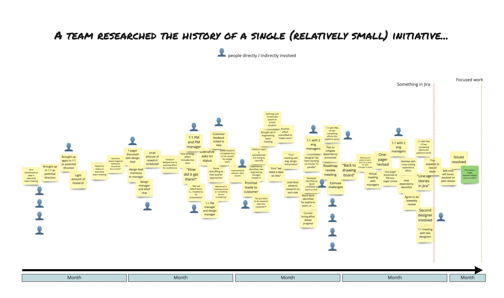

Case Study: Event Storming Perdurants
Summary
A ticket often looks like a stable thing in a system, but Event Storming can reveal the much larger perdurant around it: the signals, conversations, decisions, splits, and changing interpretations that happened before, during, and after the row in the tool.
I did a fun exercise with a leadership team recently. We picked a couple teams, invited team members from each team, and together went methodically through a sample of the "tickets" they had been working on over the last quarter. We tried, to the best of our ability, to do a forensic analysis of sorts.
What made it so useful is that it quickly surfaced many of the themes in this series. The ticket looked like a stable endurant in the tool, but once people started talking, a much larger perdurant came into view.
The Exercise
Grounding
This section is mostly about perdurants: the sequence of decisions, interactions, and shifts through time that sit behind the more stable endurants people think they are discussing.
We asked questions like:
- How did this ticket come to be?
- What was the sequence of decisions that led to people paying attention to this "thing"?
- Who was involved? How were they involved, both implicitly and explicitly?
- Where did the "splits" happen, where one thing became multiple things?
- What language did people use to describe "it"?
- What happened afterwards?
We did a Big Picture Event Storming, inspired by the work of Alberto Brandolini, Paul Rayner, and others. The basic idea is to surface actors, decisions, where and how information changed shape, and the key moments that triggered those changes.
What the Wall Revealed
Grounding
This is where the note meets métis and legibility. The wall makes visible how much situated work exists before anything becomes clean enough to travel as a formal artifact.
I'll show a fully anonymized example below from the conversation, but while you're reading it imagine a bunch of stickies on the wall like Signal raised in offsite, Follow-up to analytics, Cohort mismatch, and Onboarding flow suspected. We ended up with 20+ sticky notes just for this one segment of the meeting.
That is part of the useful shock of the exercise. The tool may show one row, or a small cluster of rows, but the actual sequence behind that row is much more extensive, distributed, and socially constructed than most people assume. There was also something genuinely cathartic about making that hidden work visible.

This activity yielded a lot of work happening before something was ever placed in a ticketing system.
An Anonymized Slice
Grounding
Read this quote as the hidden history around a later artifact. In series terms, this is the perdurant that later gets compressed into a more legible container.
Here's an anonymized transcript from two minutes of the conversation centered around one collection of tickets:
"If you remember, at the tail end of that meeting during the offsite, Sarah mentioned that activation rate for new enterprise accounts had dipped below 60%, and kind of half-directed that Mike should look into it. James was there as well. Nothing formally got logged, but later that afternoon Mike Slacked Priya in analytics like, 'hey, quick gut check, are you seeing anything weird with activation on the new cohorts?' Priya pulled a quick cut that evening and noticed the drop seemed concentrated in accounts going through the new onboarding flow, but she was not totally sure because the definitions were not lining up cleanly. That turned into a back-and-forth the next morning, clarifying what counted as 'activation,' which cohort they were even talking about, and whether this was a real signal or just noise.
From there it lingered. It would come up briefly in staff meetings, 'are we still seeing that activation thing?' and then disappear again. There were a few more ad hoc cuts from analytics, a couple of quick product reviews, and some hallway conversations with engineering about the onboarding flow. Bits and pieces of work happened behind the scenes, but nothing fully pulled together. Over time it became a running topic, never quite top priority but never going away either.
After a couple of months, enough signal had accumulated and enough people had touched it that it finally got shaped into something more concrete. It was formalized into an OKR at the director level with Alex, framed around improving activation for new enterprise cohorts. That then got presented more cohesively to teams during the next offsite, where what had started as a passing comment turned into a shared focus with clearer ownership and intent."
We finally got to the "ticket," but by then everyone in the room could see that the ticket was only a very late and very partial representation of the work.
Containers, Anchors, and Verbs
Grounding
This section connects directly to the containers vs. anchors note. Terms like initiative and objective often behave like containers, while metrics, systems, teams, and observed changes act more like anchors.
When you do activities like this, a couple patterns become very clear. The words we use to describe things, initiative, objective, and so on, are mere pointers to containers of activity, decisions, conversations, focus, and so on. While we'd like to believe they are distinct things, the reality is that they overlap, merge, fork, replace, extend, and morph into each other.
Lots of teams stress out trying to define things, bet, epic, or whatever. "If we can all agree on what _____ means, then it will make it easier to collaborate!" That is true to an extent, but note what is often missing when these definitions emerge: actual activity, actual interactions, and actual information moving across time.
The definitions treat these concepts as nouns instead of verbs. Initiatives are a pointer to initiative-ing. Objectives are a pointer to objective-ing. Part of the reason people do this is that it is much easier to debate the definition of something than to wade into the murkiness of how doing the thing varies between teams and varies by context.
This is also where the earlier distinction between containers and anchors helps. The container terms drift and absorb meaning, while the more anchor-like realities, the metric movement, the onboarding flow, the team, the system under observation, stay closer to what is actually happening.
The Left of the Ticket
Grounding
This is another version of the missing perdurant problem from the RAG note. The row in the tool is real, but the path to that row is usually hidden, and that hidden path carries much of the meaning.
The rows in tools, the ticket in Jira, the OKR in a no-code tool, capture a tiny percentage of the overall context. In the example above, the "work" started with Sarah mentioning the metric movement at the offsite. Dozens, maybe hundreds, of hours were spent working on "the ticket," or tickets, before it became a row in a database somewhere.
Some of it was written down in docs. Some made it into comments. A slide here and there. But most of it is out there, floating in the ether. As a general rule, people are somehow surprised by how much stuff happens to the left, from a timeline standpoint, of the ticket, primarily because a lot of activity happens 1:1, in silos, through informal channels, and out of sight of front-line teams.
Yes, some activity is associated with formal events like planning, check-ins, and reviews, but even that prep is largely unrecognized and, in many cases, underappreciated.
Blast Radius
Grounding
The blast radius is a practical example of coupling and métis. A small signal at one level can create large amounts of local interpretation, coordination, and invisible work elsewhere in the system.
With almost 100% frequency, a senior executive will say something like, "Gosh, I didn't expect that one sentence to cause so much work. I was just asking about it! You could have told me to wait!"
That reaction matters because people are often not aware of the blast radius of even a seemingly innocuous request at any level above the team level. Event Storming helps make that propagation visible. It shows how attention spreads, how signals are amplified, and how loosely framed concerns can quietly create large amounts of follow-on work.
Promotion vs. Reality
Grounding
This section ties back to legibility. The promoted artifact becomes the official beginning of the story because it is the first durable thing the system can point to, even when the real history started much earlier.
You also see a huge difference between things that are the units of promotion, visibility, funding, and so on, whether or not they feel real or useful, and all the other work that often goes unacknowledged and unobserved.
For example, in one case we discovered that the ticket could be traced back to a single proposal for headcount. In it, the director listed some options of things they could pursue. That somehow became part of the roadmap. There was a change on the team, and the new PM kept running with it. This was not part of any real planning ritual or discussion with stakeholders. It was a couple of lines written by someone trying to get some help.
That is another version of the legibility problem. The promoted artifact looks like the beginning of the story because it is the first thing the system can reliably point to. But it is usually not the beginning. It is just the first durable container that survived long enough to become legible.
Why Event Storming Helps
Grounding
Event Storming helps because it restores the relationship between endurants and perdurants. It gives people a way to inspect the evolving process around a thing instead of treating the later container as if it were the whole reality.
In this setting, Event Storming is useful because it reconstructs the perdurants around the artifact. It surfaces the sequence of signals, interpretations, conversations, decisions, splits, and reframings that the tool row compresses into a single object.
That makes the exercise valuable for operations people trying to model knowledge work. If you only model the containers, you miss the process through which meaning forms, changes, and spreads. If you only debate the definitions, you miss the actual interaction and information movement that gave rise to those definitions. Event Storming does not remove the ambiguity, but it makes the ambiguity more inspectable.
Beyond Big Picture Event Storming
Big Picture Event Storming is often the beginning, not the end.
One of the useful themes in Paul Rayner's EventStorming material, and in adjacent Event Storming practice, is that once you have a shared picture, you can zoom in. You can move from the broad historical wall into more focused views of the system: bounded contexts, business rules, commands, policies, aggregates, read models, and the actors or systems involved.
That matters for this series because at that point you are no longer just facilitating a conversation. You are starting to create an ontology for the domain. You are deciding:
- which events really matter
- what should count as stable enough to name
- what should be treated as an action, a state change, or a policy
- where one concept ends and another begins
- which abstractions are useful, and which ones are flattening too much
In more DDD-flavored terms, this is where Big Picture Event Storming can give way to design-level work. The wall helps people discover the major perdurants. The deeper work asks how those perdurants relate to commands, aggregates, business rules, and read models. In other words, the exercise starts to move from "what happened?" toward "what is the structure of this domain, and how should we model it?"
That deeper move is especially important in complex settings. You do not want the wall itself to become another frozen artifact. The value is not only in documenting the history. The value is in using that shared understanding to refine language, test boundaries, capture curated views, and decide what should remain local versus what should become a more durable part of the model.
So if you wanted to go deeper after a session like this, the next step would not just be "clean up the board." It would be to ask which parts of the picture deserve a more explicit ontology: which events recur, which commands trigger them, which policies connect them, which aggregates or entities they belong to, and which terms need tighter definitions because they are carrying too much ambiguity.
The Core Insight
Grounding
The larger series point is that knowledge work often fails when containers replace anchors, when legibility replaces métis, or when a visible endurant hides the more important perdurant around it.
Event Storming is not just a facilitation technique here. It is a way to make hidden perdurants visible. It shows that many of the things organizations treat as stable entities are really compressed summaries of longer, messier, more social histories.
That is why the exercise overlaps so strongly with the rest of this series. It exposes the gap between containers and anchors, between legibility and métis, and between the clean row in the system and the much larger reality that row only partially represents.
Try This Now
- Pick one ticket, request, or initiative that looks straightforward in a tool.
- Write down three things that happened to the left of it: a signal, a conversation, a decision, a reinterpretation, or a split.
- Ask: how much of the real story is missing once the visible row becomes the official object?
Keep Reading
Theoretical SDLC vs. Real SDLC(s)